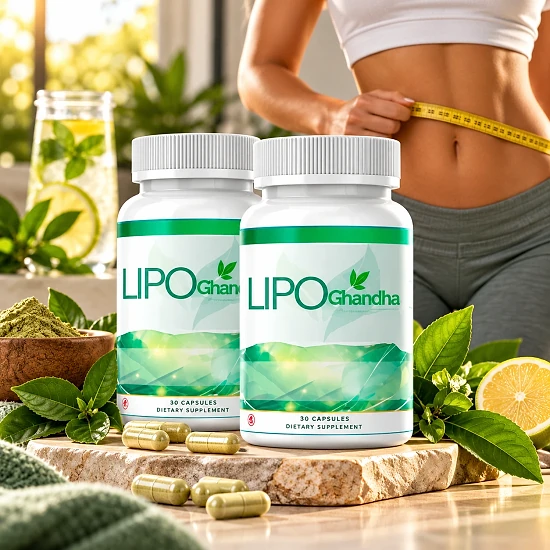

Was ist LipoGandha und wie wirkt es?
LipoGandha ist ein Nahrungsergänzungsmittel mit Pflanzenstoffen in Kapselform. Die offizielle Website beschreibt es als natürliche Formel, die das allgemeine Wohlbefinden fördern und den Körper in einem stressigen, anspruchsvollen Alltag unterstützen soll. Die Marke spricht davon, mehr innere Balance und Leichtigkeit in den Alltag zu bringen.
Im Mittelpunkt steht eine Ballaststoff-Mischung. Laut Etikett enthält jede Kapsel gemahlene Haferkleie, Leinsamenpulver, Flohsamenschalenpulver, Apfelpektin, Konjak (Teufelszunge), Schwarznussschale, Pflaume und das Milchsäurebakterium Lactobacillus acidophilus.
Wie soll das wirken? Ballaststoffe aus Hafer, Leinsamen und Flohsamen gehören seit Langem zu einer bewussten Ernährung und werden traditionell für eine geregelte Verdauung und ein angenehmes Gefühl im Bauch geschätzt. Lactobacillus acidophilus ist eine Bakterienkultur, die häufig in Produkten für die Darmflora eingesetzt wird. Die Marke stellt LipoGandha als einfache Ergänzung für Menschen vor, die auf natürliche Weise auf ihr Wohlbefinden achten möchten.
Wichtig ist eine realistische Einordnung: Die Mengen pro Kapsel sind klein, und die Rechtshinweise der Marke betonen ausdrücklich, dass es keine Garantie für bestimmte Ergebnisse gibt, auch nicht für eine Gewichtsabnahme. LipoGandha ersetzt keine ausgewogene Ernährung und keine Bewegung. Wer das Produkt ausprobiert, sollte es deshalb als kleinen Baustein einer gesunden Routine sehen und nicht als Abkürzung.
Jede Flasche enthält 30 Kapseln mit einem Nettogewicht von 45 g, bei einer Kapsel pro Tag also einen Monatsvorrat. Laut Etikett wird das Produkt in den USA aus in- und ausländischen Inhaltsstoffen hergestellt.
Hinter dem Produkt steht laut Impressum das Unternehmen LIVROS DIGITAIS DE PERFORMANCE LTDA aus Brasilien; der Verkauf in der EU läuft über Digistore24.
LipoGandha ist ein Nahrungsergänzungsmittel. Es ist nicht dazu bestimmt, Krankheiten zu diagnostizieren, zu behandeln, zu heilen oder ihnen vorzubeugen, und es ersetzt keine ärztliche Beratung.
LipoGandha Inhaltsstoffe
Das Etikett nennt die genaue Menge jedes Inhaltsstoffs pro Kapsel. Alle Wirkstoffe gehören zu einer gemeinsamen Mischung, und für keinen von ihnen ist ein Nährstoffbezugswert (NRV) festgelegt. Das sind die Bestandteile der Mischung:
Gemahlene Haferkleie (430 mg): der Hauptbestandteil, eine klassische Ballaststoffquelle aus Hafer.
Leinsamenpulver (130 mg): gemahlene Leinsamen, reich an Ballaststoffen und pflanzlichen Fetten.
Flohsamenschalenpulver (103 mg): Schalen von Plantago ovata, die in Wasser stark aufquellen.
Apfelpektin und Konjak (je 8,5 mg): zwei lösliche Ballaststoffe aus Apfel und aus der Konjakknolle.
Schwarznussschale und Pflaume (je 5 mg): traditionelle pflanzliche Zutaten.
Lactobacillus acidophilus (5 mg, 1,5 Mrd. KBE): eine Milchsäurebakterienkultur.
Weitere Zutaten sind Hypromellose (Kapselhülle), Reismehl als Füllstoff und Magnesiumsalze von Speisefettsäuren als Rieselhilfe. Zusammen ergibt die Ballaststoff-Mischung etwa 695 mg pro Kapsel. Im Vergleich zu der Menge an Ballaststoffen, die über eine normale Mahlzeit mit Vollkornprodukten, Obst und Gemüse aufgenommen wird, ist das eine kleine Ergänzung. Die Kapsel ersetzt also keine ballaststoffreiche Ernährung, sondern kann sie im Alltag begleiten.
Allergene: Das Etikett hebt Haferkleie (glutenhaltiges Getreide) und Schwarznuss (Schalenfrucht) hervor. Wer darauf reagiert, sollte das Produkt meiden. Die vollständige Zutatenliste und das Etikett veröffentlicht die Marke als PDF auf ihrer Website.
LipoGandha Nebenwirkungen
LipoGandha besteht überwiegend aus Ballaststoffen und Pflanzenpulvern, die aus der Ernährung bekannt sind. Die offizielle Website nennt keine konkreten Nebenwirkungen. Bei Ballaststoffen kann es aber, gerade zu Beginn, zu einem Völlegefühl oder Blähungen kommen, bis sich der Körper umgestellt hat.
Das Etikett enthält klare Warnhinweise. Die empfohlene Dosis darf nicht überschritten werden, und das Produkt ist nicht für Personen unter 18 Jahren, Schwangere oder Stillende geeignet. Vor der Verwendung sollte man sich ärztlich beraten lassen, besonders bei Medikamenteneinnahme, gesundheitlichen Einschränkungen oder ärztlicher Aufsicht.
Das Etikett sagt außerdem, dass eine Verwendung bei gleichzeitiger Einnahme von Arzneimitteln nicht empfohlen wird. Dieser Hinweis ist sinnvoll und sollte ernst genommen werden, denn quellende Ballaststoffe wie Flohsamenschalen können die Aufnahme von Medikamenten beeinflussen. Und wer mehr Ballaststoffe zu sich nimmt, sollte laut Etikett ausreichend Wasser trinken.
Wegen Hafer und Schwarznuss ist das Produkt für Menschen mit Zöliakie oder Nussallergie nicht geeignet. Das Produkt darf laut Etikett nicht in die Hände von Kindern gelangen; bei beschädigtem Originalitätsverschluss nicht verwenden. Bei Beschwerden die Einnahme beenden und ärztlichen Rat einholen. Wie gut ein Nahrungsergänzungsmittel vertragen wird, ist individuell verschieden; achten Sie in den ersten Tagen darauf, wie Ihr Körper reagiert, und steigern Sie die Trinkmenge.
LipoGandha Dosierung
Die Verzehrempfehlung auf dem Etikett ist eindeutig: Erwachsene nehmen täglich eine (1) Kapsel mit einer Mahlzeit ein. Eine Flasche mit 30 Kapseln reicht damit genau einen Monat. Die Einnahme zu einer Mahlzeit ist bei Ballaststoffen sinnvoll, weil sie dann zusammen mit dem Essen den Verdauungstrakt passieren.
Nehmen Sie die Kapsel mit einem großen Glas Wasser ein. Weil LipoGandha vor allem Ballaststoffe enthält, ist ausreichend Flüssigkeit über den Tag verteilt wichtig; darauf weist auch das Etikett hin.
Am einfachsten ist es, die Kapsel immer zur gleichen Mahlzeit einzunehmen, zum Beispiel zum Frühstück oder Mittagessen. So entsteht eine feste Routine, und Regelmäßigkeit zählt mehr als der genaue Zeitpunkt. Zwischen der Kapsel und eventuellen Medikamenten sollte ohnehin ein ärztlich abgestimmter Abstand liegen.
Überschreiten Sie die empfohlene Menge nicht. Wenn Sie Medikamente einnehmen, sprechen Sie vorher mit Ihrem Arzt, denn das Etikett rät von der gleichzeitigen Einnahme mit Arzneimitteln ab.
Laut Etikett ersetzen Nahrungsergänzungsmittel keine abwechslungsreiche und ausgewogene Ernährung und keine gesunde Lebensweise. LipoGandha passt am besten zu einem Alltag mit frischen Lebensmitteln, Bewegung und genug Schlaf. Lagern Sie die Flasche kühl und trocken unter 30 °C; das Mindesthaltbarkeitsdatum steht auf der Unterseite der Flasche.
LipoGandha – Rückerstattung
LipoGandha wird laut offizieller Website mit einer 60-Tage-Geld-zurück-Garantie verkauft, die ab dem Kaufdatum gilt. Wer aus irgendeinem Grund nicht zufrieden ist, kann sich laut Website einfach an das Team wenden, das bei der Rückerstattung hilft.
Wer ist zuständig? Die Bestellung läuft über Digistore24. Auf dem Etikett ist als Kundenservice helpdesk@digistore24.ie angegeben; im Impressum der Website steht zusätzlich die Adresse contact@fitlifeus.com.
So gehen Sie vor: Schreiben Sie innerhalb der 60 Tage eine E-Mail an den Kundenservice, nennen Sie Ihre Bestellnummer und den Wunsch nach Rückerstattung. Die Bestellbestätigung von Digistore24 enthält alle nötigen Daten zu Ihrem Kauf, bewahren Sie diese E-Mail deshalb gut auf.
Was die Website nicht sagt: Ob die Flaschen zurückgeschickt werden müssen und wer die Rücksendung bezahlt, steht auf der Bestellseite nicht. Fragen Sie das beim Kundenservice nach, bevor Sie etwas verschicken, und bewahren Sie die Sendungsnummer der Rücksendung sorgfältig auf.
Beachten Sie auch, dass die Website als EU-Vertrieb ShipOffers in den Niederlanden nennt, das Etikett dagegen Digistore24 in Dublin. Für die Garantie ist es daher am sichersten, direkt über die offizielle Seite zu bestellen und alle Belege aufzuheben.
Lesen Sie die Bedingungen auf der offiziellen Website, bevor Sie bestellen, und notieren Sie sich das Kaufdatum, damit Sie die Frist von 60 Tagen im Blick behalten.
LipoGandha – Wo kaufen?
LipoGandha wird über seine offizielle Website fitlifeus.online bestellt, und die Zahlung läuft über Digistore24. Die offizielle Website verweist nicht auf Amazon oder andere Marktplätze, und andere Verkaufsstellen werden dort nicht genannt.
Flaschen von unbekannten Händlern können identisch aussehen, doch nichts erlaubt es, ihre Herkunft oder ihre Lagerung zu überprüfen. Für ein Nahrungsergänzungsmittel ist das eine echte Frage der Qualität und Sicherheit, und ein Kauf außerhalb der offiziellen Website ist möglicherweise nicht durch die 60-Tage-Garantie abgedeckt.
Deshalb bestellen die meisten Käufer LipoGandha direkt an der Quelle. Die offizielle Website sichert den Zugang zum authentischen Produkt, zum Kundenservice und zur vollständigen Garantie.
Achten Sie beim Bezahlen darauf, dass Sie sich auf der offiziellen LipoGandha-Website befinden, um jede Fälschung zu vermeiden. Prüfen Sie die Adresse in der Browserzeile und den Bestellvorgang über Digistore24, denn nur so gelten die Garantie und der Kundenservice ohne Einschränkungen. Bei Fragen zur Bestellung hilft der Kundenservice per E-Mail weiter, am besten mit Ihrer Bestellnummer im Betreff.
Um sicherzugehen, dass Sie das Originalprodukt erhalten, besuchen die meisten Nutzer die offizielle Website.
Ist LipoGandha Betrug?
Nach den Informationen der offiziellen Website und des Etiketts scheint LipoGandha kein Betrug zu sein. Es ist ein echtes Nahrungsergänzungsmittel mit Ballaststoffen und Pflanzenstoffen, das über Digistore24 verkauft wird, eine etablierte Plattform.
Positiv ist die Transparenz des Etiketts: Es nennt jede Zutat mit ihrer Menge pro Kapsel, die Allergene, eine klare Verzehrempfehlung und ausführliche Warnhinweise. Dazu kommen ein Impressum mit Firmenname und Anschrift sowie eine 60-Tage-Geld-zurück-Garantie.
Es gibt aber Punkte, die Sie kennen sollten. Die Mengen einiger Zutaten sind sehr klein, und die Marke selbst schließt eine Garantie für bestimmte Ergebnisse aus. Manche Werbeseiten auf derselben Domain verwenden übertriebene Aussagen und Kommentare zu anderen Produkten; verlassen Sie sich deshalb auf das Etikett.
Außerdem unterscheiden sich die Angaben zum EU-Vertrieb zwischen Website und Etikett, und die Bestellseite erklärt den Ablauf der Rückerstattung nur knapp. Auch Bewertungen oder Kundenstimmen zu LipoGandha selbst sind auf der offiziellen Website nicht zu finden.
Unser Rat: Lesen Sie das Etikett, trinken Sie ausreichend Wasser, und sprechen Sie mit Ihrem Arzt, wenn Sie Medikamente einnehmen.
Für Erwachsene, die eine einfache tägliche Ballaststoff-Ergänzung für mehr Wohlbefinden und Leichtigkeit suchen, kann LipoGandha eine Option sein, am besten über die offizielle Website bestellt und mit der Garantie im Rücken.
Wer Produktdetails überprüfen oder die aktuelle Verfügbarkeit prüfen möchte, ist auf der offiziellen LipoGandha-Website am sichersten aufgehoben.

Verfügbarkeit auf der offiziellen Website prüfen